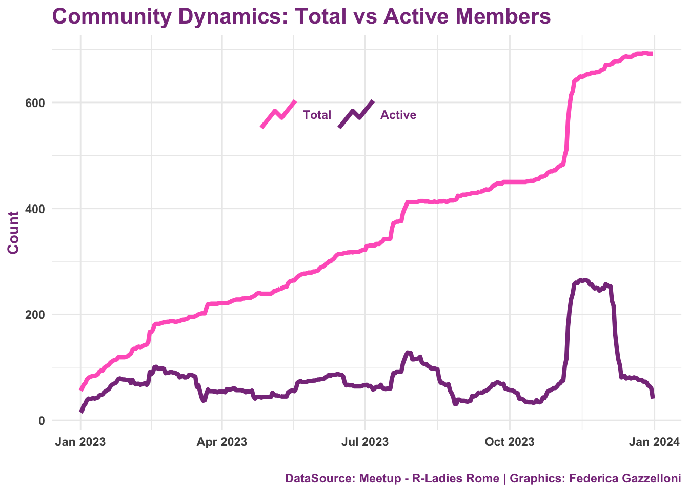
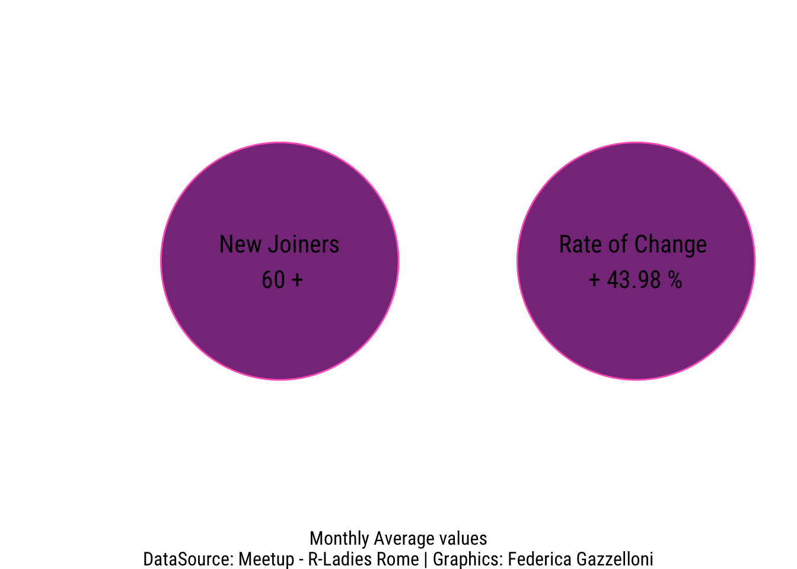
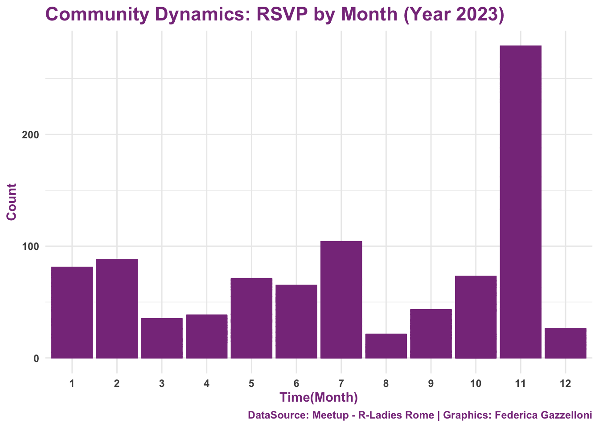

One-Year of Events: What’s happend at R-Ladies Rome
Welcome to R-Ladies Rome Blog!
Inspiring Insights and Knowledge Sharing in R Programming
Overview
As we bid farewell to 2023, it’s time to look back and celebrate the incredible journey of R-Ladies Rome. This year has been marked by empowerment, collaboration, and growth within our vibrant community.
Community Growth and Collaboration
Throughout the year, our community grew stronger. Members engaged in passionate discussions, shared their experiences, and collaborated on projects. We strengthened our ties with other R-Ladies chapters worldwide and explored opportunities for joint events.
A Year of Diversity and Inclusion
One of our primary goals at R-Ladies Rome is to foster an inclusive environment. Throughout 2023, we hosted numerous events focused on diversity in tech, creating spaces where everyone, regardless of background or experience level, felt welcome. From web technology workshops to interactive coding sessions, we embraced the richness that diverse perspectives bring to our community.

Tech Talks and Workshops
Our calendar was packed with enlightening tech talks and hands-on workshops. Renowned speakers and experts shared their knowledge on data visualization, statistics, and R programming. These events not only provided valuable insights but also showcased the vast possibilities that technology offers.
Data Visualization Month
November was an exciting month as we delved deep into the world of data visualization. With two remarkable events featuring experts like Cédric Scherer and Cara Thompson, we explored the art and science of transforming data stories into engaging visual narratives. The live-coding sessions and Q&A interactions made this month a highlight of our year.

Empowering Women in Tech
Empowering women in technology has been a core focus for R-Ladies Rome. We organized events specifically designed to support and uplift women in the tech field. From networking sessions to skill showcases, these gatherings aimed to create a supportive community for women in various tech-related professions.
Looking Forward to 2024
As we close the chapter on 2023, we’re excited about the possibilities that 2024 holds. With a commitment to continuous learning, collaboration, and empowerment, R-Ladies Rome is poised to embark on another year of growth and impact.